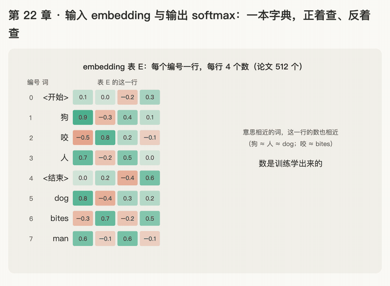

第 22 章 · 输入 embedding 与输出 softmax：词怎么变成向量，向量怎么变回词
本章回答：前面 21 章一直说"每个词是 512 个数"，这 512 个数从哪来？decoder 最后一行的 512 个数，又怎么变成"下一个词是 bites"？
讲解日期：2026-11-08 起 · 上一章：第 21 章 拼装 Transformer · 下一章：第 23 章 复杂度
对应原文：materials/text/papers/attention-is-all-you-need-1706.03762.txt§3.4 L253–L259；词表大小见 §5.1 L347–L351；生成时的 beam search 见 §6.1 L429–L431
本章缩写：embedding（嵌入：把词"嵌"进一串数里，也就是把词换成一个向量）；token（词元：模型眼里的一个"词"，可能是整词，也可能是词的一块）；tokenizer（分词器：token + -izer"做……的工具"，把句子切成 token 并编号）；V = Vocabulary size（词表大小：一共有多少个不同的 token）；ID = identifier（编号）；BPE = Byte-Pair Encoding（字节对编码：一种切词、编号的方法，CS336 a1 要写）；logits（分数：softmax 之前每个词的原始分，log + -its，"还没变成概率的对数几率"，这里当"原始分数"理解即可）；greedy（贪心：每轮直接挑概率最大的词）；beam search（束搜索：同时保留几条最好的候选句子往下走）；\(d_{model}\)：d = dimension（维度），每个词向量有几个数（论文 512）；PyTorch（Python + torch：深度学习框架）、nn = neural network（神经 / 网络）、argmax（最大值所在的位置）等代码里的名字见附录"PyTorch 对照"。全部缩写见 附录 · 缩写与术语表
讲解
第一步：输入 embedding = 查表（2026-11-08）
类比：一本按编号排好的字典。 每个词有一个页码。翻到第 i 页，页上印着 512 个数，把它们抄下来，就是这个词的向量。
分两小步：
① 词 → 编号。 先把所有可能出现的词排好号，这张名单叫词表（vocabulary），大小记作 V。把句子切成 token 并换成编号，是 tokenizer 的活。论文用 BPE 切词，英德翻译的词表大约 37000 个 token（L348–L349："a shared source-target vocabulary of about 37000 tokens"）。编号具体怎么分，CS336 a1 写 BPE 时再学；这里只要知道：每个 token 有一个固定的编号。
② 编号 → 向量。 准备一张表 E：V 行 × \(d_{model}\) 列，每个编号占一行。编号 i 的向量就是表 E 的第 i 行：
例子：一个只有 5 个词的小词表，每个词 4 个数（论文是 512 个）。表里的数是编的：
| 编号 | 词 | 表 E 的这一行 |
|---|---|---|
| 0 | <开始> | [0.1, 0.0, −0.2, 0.3] |
| 1 | 狗 | [0.9, −0.3, 0.4, 0.1] |
| 2 | 咬 | [−0.5, 0.8, 0.2, −0.1] |
| 3 | 人 | [0.7, −0.2, 0.5, 0.0] |
| 4 | <结束> | [0.0, 0.2, −0.4, 0.6] |
"狗 咬 人" → 编号 [1, 2, 3] → 依次取第 1、2、3 行 → 得到 3 行 × 4 列的表。换成论文的尺寸，就是第 21 章 encoder 一开始"进来的 3 × 512"（之后再加上位置编码，第 14–16 章）。
- 查表不用算：没有乘法、没有加法，只是"取第 i 行"。
- 两边都要查：encoder 的原文（狗 咬 人）、decoder 的译文（<开始> dog bites）都先查表变成向量（L255–L256："convert the input tokens and output tokens to vectors of dimension \(d_{model}\)"）。
表里的数从哪来：学出来的。 论文 L255 说 "learned embeddings"：一开始随便填（随机数），训练时和 \(W^Q\)、\(W^K\)、FFN 那些矩阵一起，一点点调。调好以后，意思相近的词，那一行的数也往往相近。上面例子里故意把"狗"和"人"编得比较像（都是名词），和"咬"差得远。用第 2 章的点积量一量，像的两行点积大。
一句话：embedding 就是一张 V × 512 的表，词先换成编号，再取表里的那一行；表里的数是训练学出来的。
第二步：输出：最后一行 512 个数 → 每个词一个分数 → softmax → 概率（2026-11-08）
第 21 章第四步说过：decoder 每一轮只取输出的最后一行（最新那个词的 512 个数），记作 h，用它来选下一个词。这一步讲"怎么选"。
类比：给词表里每个词打分，再按分数分比例。 这两件事我们都学过：打分是点积（第 2 章），分比例是 softmax（第 3、6 章）。只是这回被打分的不是"句子里的几个词"，而是词表里的全部 V 个词。
论文 L256–L257："the usual learned linear transformation and softmax function to convert the decoder output to predicted next-token probabilities"。分三小步：
- 线性层打分：h（1 × 512）乘一个矩阵 \(W_{out}\)（512 × V），得到 1 × V：每个词一个分数，叫 logits。\(W_{out}\) 的每一列对应一个词，那个词的分数 = h 和这一列的点积。
- softmax 分比例：把 V 个分数变成 V 个概率，都在 0～1 之间，加起来等于 1。
- 选词：最简单的做法是挑概率最大的（greedy，贪心）。
例子：论文的原文和译文共用一张词表（L348："shared source-target vocabulary"）。把第一步的小词表扩成 8 个词，后面加上 dog、bites、man：
| 编号 | 0 | 1 | 2 | 3 | 4 | 5 | 6 | 7 |
|---|---|---|---|---|---|---|---|---|
| 词 | <开始> | 狗 | 咬 | 人 | <结束> | dog | bites | man |
| 分数 logits | 0.7 | −1.7 | 1.7 | −1.6 | 2.0 | −1.5 | 2.9 | −1.6 |
| 概率（softmax） | 0.059 | 0.005 | 0.162 | 0.006 | 0.218 | 0.007 | 0.537 | 0.006 |
这是第 21 章第 2 轮的情形：输入"<开始> dog"，最后一行 h = [−1, 2, −1, 2]（编的，d = 4）。8 个分数里 bites 最高，softmax 后占 54%，greedy 就选 bites。8 个概率加起来正好是 1。
- 形状：h 是 1 × \(d_{model}\)，\(W_{out}\) 是 \(d_{model}\) × V，出来 1 × V。论文 V 大约 37000，所以每一轮都要给三万七千个词各打一个分。
- 为什么只取最后一行：前面几行是"已经写出的词"的位置，它们的下一个词早就知道了；只有最后一行在问"接下来写什么"。（训练时每一行都会用上，每一行都去猜它的下一个词，这是第 17 章因果 mask 存在的原因。）
- 不一定只挑最大：论文翻译时用的是 beam search（束搜索），同时留 4 条最好的候选句子往下走，最后挑整句最好的（L429："beam search with a beam size of 4"）。原理还是这张概率表，只是挑法更讲究。
一句话：最后一行 h 乘 \(W_{out}\)，给词表里每个词打一个分；softmax 把分数变成概率；挑概率最大的（或用 beam search）作为下一个词。
第三步：同一张表用两次：输出层的权重就是 embedding 表（2026-11-08）
原文（L257–L258）："we share the same weight matrix between the two embedding layers and the pre-softmax linear transformation"。三处用到"V × \(d_{model}\) 的表"，论文让它们共用同一张：
| 用在哪 | 形状 | 作用 |
|---|---|---|
| encoder 的 embedding | V × \(d_{model}\) | 原文的词 → 向量（第一步） |
| decoder 的 embedding | V × \(d_{model}\) | 译文的词 → 向量（第一步） |
| softmax 前的线性层 \(W_{out}\) | \(d_{model}\) × V | 向量 → 每个词的分数（第二步） |
第三个的形状正好是前两个翻过来（第 12 章的转置）：\(W_{out} = E^\top\)。所以三个其实是同一张表 E。
类比：同一本字典，正着查、反着查。
- 正着查（输入）：知道编号 i，翻到第 i 行，抄下这个词的向量；
- 反着查（输出）：手里有一个向量 h，拿它和字典里每一行比一比像不像（点积），越像分数越高。
用第二步的例子验证：8 个词的表 E（前 5 行和第一步一样，后 3 行是新加的，都是编的）：
| 编号 | 词 | E 的这一行 | 和 h = [−1, 2, −1, 2] 的点积 |
|---|---|---|---|
| 0 | <开始> | [0.1, 0.0, −0.2, 0.3] | −0.1 + 0 + 0.2 + 0.6 = 0.7 |
| 1 | 狗 | [0.9, −0.3, 0.4, 0.1] | −1.7 |
| 2 | 咬 | [−0.5, 0.8, 0.2, −0.1] | 1.7 |
| 3 | 人 | [0.7, −0.2, 0.5, 0.0] | −1.6 |
| 4 | <结束> | [0.0, 0.2, −0.4, 0.6] | 2.0 |
| 5 | dog | [0.8, −0.4, 0.3, 0.2] | −1.5 |
| 6 | bites | [−0.3, 0.7, −0.2, 0.5] | −(−0.3) + 1.4 + 0.2 + 1.0 = 2.9 |
| 7 | man | [0.6, −0.1, 0.6, −0.1] | −1.6 |
正是第二步那一行分数：h 和哪个词的向量最像，哪个词分最高。h 和 bites 那一行方向最接近，所以选中 bites。注意"咬"也有 1.7 分：它和 bites 意思相同，向量本来就相近。训练好的翻译模型会让 h 更偏向英文这一边。
为什么要共用（论文只说"similar to [30]"，[30] 是 Press & Wolf 的论文 Using the output embedding to improve language models，L629）：
- 省参数：一张 V × 512 的表很大（题 1（b）你会算到它有多大），三张变一张；
- 意思一致：一个词"进来时的样子"和"被选中时要像的样子"是同一个向量，训练时两头都在调同一行，学得更快。
现在的大模型有的共用（如 GPT-2），有的分开（如 LLaMA），都是取舍。
一句话：输入查表和输出打分用的是同一张表 E；输出时，h 和每个词的那一行做点积，越像分越高。
第四步：查表后乘 \(\sqrt{d_{model}}\)（2026-11-08）
原文（L259）："In the embedding layers, we multiply those weights by \(\sqrt{d_{model}}\)"。也就是查表取出的那一行，每个数都乘 \(\sqrt{512} \approx 22.6\)，然后才加位置编码：
例子：小表 d = 4，\(\sqrt{4} = 2\)。"狗"那一行 [0.9, −0.3, 0.4, 0.1] 先乘 2，变成 [1.8, −0.6, 0.8, 0.2]，再加上它那个座位的位置编码。
为什么要乘：论文没写原因（A2 精读笔记"未解决的问题"里也记着这一条）。常见的解释是"让两样东西音量差不多"：
- 位置编码的数在 −1 到 1 之间（第 15、16 章：sin、cos 的值不会超过 1）；
- 共享的表 E 里的数通常很小：E 同时要当输出层，h 和它点积出的分数不能太大（太大 softmax 会饱和，第 7 章），所以一般用很小的随机数初始化，比如每个数大约在 \(\pm 1/\sqrt{d_{model}}\) 的量级（512 维时约 ±0.04）；
- 如果直接相加，词的信息就被位置编码盖住了，像小声说话旁边有人大声报座位号。乘 \(\sqrt{d_{model}}\) 后，词向量的每个数大约回到 ±1 的量级，和位置编码差不多响。
这是常见理解，不是论文原话；第 24 章通读原文时还会再看一眼这句。
一句话：查完表先乘 \(\sqrt{d_{model}}\)（论文 ≈ 22.6），让词的数和位置编码一样"响"，再相加；论文没解释原因，这是常见解释。
动画演示：一本字典，正着查、反着查

可交互版：animations/22-embedding-softmax.html（要能点按钮、拖滑块，需要用本地服务打开，见 animations/README.md"跑起来看"；两个滑块：h 的方向从"像 dog"转到"像 bites"；h 的长度放大几倍）。
8 个词的小词表，每个词 4 个数（论文 V ≈ 37000、512 个数）；表里的数和讲解里的一样，都是编的。
怎么看：
- embedding 表 E：每个编号一行，意思相近的词那一行也相近（第一步）；
- 查表："狗 咬 人" → 编号 [1, 2, 3] → 取出这三行，再乘 √4 = 2（第一、四步）；
- 输出：h = [−1, 2, −1, 2] 和每一行做点积，得到 8 个分数（第二、三步）；
- softmax：bites 0.537 最高，8 个概率加起来是 1（第二步）；
- 同一张表用三次：两个 embedding + 输出层 Eᵀ（第三步）；
- 滑块：h 从像 dog 转到像 bites，概率最高的词跟着变；h 越长，分数差距越大，softmax 越尖。
练习与作答记录
题 1（第一步 查表）： （a）用上面 5 个词的小词表，"人 咬 狗"查表后得到几行几列？第 1 行是表 E 里编号几的那一行？ （b）论文词表大约 37000 个 token，\(d_{model}\) = 512。表 E 是几行几列？一共大约多少个数（估到"多少万"就行）？
题 2（第二步 输出打分）：论文词表大约 37000 个 token，\(d_{model}\) = 512。 （a）输出线性层 \(W_{out}\) 是几行几列？乘完以后得到几个分数？ （b）softmax 之后，这些概率加起来等于几？ （c）为什么每一轮只拿最后一行 h 去打分？
题 3（第三步 共享权重）： （a）共享以后，"bites" 的分数等于 h 和哪个向量做点积？ （b）三处"V × 512 的表"共用成一张，比各用各的少了几张表？
题 4（第四步 乘 \(\sqrt{d_{model}}\)）： （a）如果 \(d_{model}\) = 16，查表取出的一行要乘几？ （b）用自己的话说：不乘的话，会出什么问题？
口诀
词先换编号，编号查一行；表是学出来的，原文译文都查它。
最后一行去打分，词表每个词一分；softmax 分比例，挑最大或束搜索。
一本字典两头用：正查取向量，反查比相像。
查完乘根号 d，词和座位一样响。
本章复习卡片
（练习做完后，按答错、卡住的地方补上。）
附录 · 延伸阅读
留给以后深入学习用，不影响本章主线。★ 是建议先读的。
- 本地论文的文本版在materials/text/papers/，表里的行号就是指这个文本版。
- CS336 handout 在cs336-spring2025/materials/text/cs336_spring2025_assignment1_basics.txt。
推荐阅读
| 读什么 | 读哪里 | 读它为了什么 |
|---|---|---|
| ★ Attention Is All You Need | §3.4 L253–L259；§5.1 L347–L351；§6.1 L427–L431 | 本章原文：learned embeddings、线性层 + softmax、三处共享权重、乘 \(\sqrt{d_{model}}\)；共用词表约 37000（英德）、32000（英法）；生成时用 beam size 4、长度惩罚 α = 0.6 |
| ★ Phuong & Hutter 2022，Formal Algorithms for Transformers | formal-algorithms-transformers-2207.09238.txt Algorithm 1 Token embedding（L248）；Algorithm 7 Unembedding（L418） |
用伪代码看"查表"和"反查打分"两步，各只有一两行 |
| ★ CS336 assignment 1 handout | §3.2 L664–L671；§3.4.3 Embedding Module（L895 起）；§4.1 Cross-entropy loss（L1370 起）；§6 Generating text（L1792 起，温度 L1823） | 动手版：自己写 Embedding 模块和输出层；训练时用"正确词的概率"算交叉熵 loss；生成时的温度采样（temperature）和 top-p |
| Press & Wolf 2017，Using the Output Embedding to Improve Language Models | 全文（本地没有文本版；AIAYN 参考文献 [30]，L629） | 共享输入、输出 embedding 的出处 |
| AIAYN §5.4 Label Smoothing | L409–L410 | 训练时不让正确词的目标概率是 1，而是 0.9，剩下 0.1 分给别的词：模型会"没那么自信"，困惑度变差但翻译分数变好 |
数学原理
- 查表 = one-hot 乘矩阵：编号 i 写成一个长度 V 的向量，只有第 i 位是 1（one-hot：独热，只有一个位置"热"），乘 E 正好取出第 i 行。实现时直接取行，不真的做乘法。
- 线性层 + softmax：\(p_i = \dfrac{e^{h \cdot E[i]}}{\sum_{j=1}^{V} e^{h \cdot E[j]}}\)。共享权重时，分子就是 h 和第 i 个词向量的点积再取 e 的次方。
- 为什么是 \(\sqrt{d_{model}}\)：d 个独立的数，每个大小约 \(1/\sqrt{d}\)，乘 \(\sqrt{d}\) 后每个约为 1；这和第 8 章"除以 \(\sqrt{d_k}\) 让点积不随维度变大"是同一类"按维度调音量"的想法，方向相反。
- 参数量：一张表 V × \(d_{model}\) 个数；共享后整个模型只有一张。
公式清单
| 公式 | 意思 |
|---|---|
| \(\mathbf{x} = E[i]\)，\(E\)：V × \(d_{model}\) | 输入 embedding：取第 i 行 |
| \(\mathbf{x}_{\text{进第 1 层}} = \sqrt{d_{model}}\, E[i] + PE_{pos}\) | 乘 \(\sqrt{d_{model}}\) 再加位置编码 |
| \(\text{logits} = h\,W_{out}\)，\(W_{out}\)：\(d_{model}\) × V | 最后一行给每个词打分 |
| \(W_{out} = E^\top\)，\(\text{logit}_i = h \cdot E[i]\) | 共享权重：反查，比谁最像 |
| \(p = \text{softmax}(\text{logits})\)，\(\sum_i p_i = 1\) | 分数变概率 |
PyTorch 对照：把本章的数字用代码算一遍
PyTorch（Py = Python，torch = 火炬：最常用的深度学习框架）。代码在仓库本地
transformer-deep-dive/solutions/chapter-code/ch22_embedding_softmax.py，配套测试tests/test_ch22.py（在线版不带代码文件，下面摘了关键几行）。Mac 上直接能跑，不需要 GPU：
bash cd transformer-deep-dive/solutions/chapter-code uv run python ch22_embedding_softmax.py # 一步一步打印 uv run pytest tests/test_ch22.py # 核对讲义里的数字
讲义 ↔ 代码：
| 讲义 | 公式 | PyTorch 写法 | 跑出来 |
|---|---|---|---|
| 第一步 查表 | \(\mathbf{x} = E[i]\) | emb = nn.Embedding(V, d)；emb(ids) |
"狗 咬 人" → 编号 [1, 2, 3] → 3 × 4 |
| 数学原理 one-hot | one-hot × E | one_hot(ids, V).float() @ emb.weight |
和 emb(ids) 完全一样 |
| 第一步 意思相近 | 点积 | E[1] @ E[3]、E[1] @ E[2] |
狗·人 = 0.89，狗·咬 = −0.62 |
| 第三步 共用一张表 | \(W_{out} = E^\top\) | lm_head = nn.Linear(d, V, bias=False)；lm_head.weight = emb.weight |
lm_head.weight is emb.weight → True |
| 第二步 打分 + softmax | \(\text{logits} = hW_{out}\)，\(p = \text{softmax}\) | logits = lm_head(h)；p = torch.softmax(logits, dim=-1) |
bites 2.9 分、0.537；加起来 1.0 |
| 第二步 greedy | 挑最大 | p.argmax() |
6 → bites |
| 第四步 乘 √d 加位置 | \(\sqrt{d_{model}}\,E[i] + PE_{pos}\) | math.sqrt(d) * emb(ids) + pe |
狗坐 0 号座：[1.8, −0.6, 0.8, 0.2] + [0, 1, 0, 1] = [1.8, 0.4, 0.8, 1.2] |
| 第四步 为什么乘 | 音量 | torch.randn(512) / math.sqrt(512) |
表 E 的数平均 ≈ 0.035；乘 √512 后 ≈ 0.80；位置编码 ≈ 0.58 |
关键几行：
emb = nn.Embedding(8, 4) # 表 E：8 行（V）× 4 列（d_model），一开始是随机数
emb.weight.copy_(torch.tensor(E_ROWS)) # 换成讲义里编的那张表（要包在 torch.no_grad() 里）
x = emb(torch.tensor([1, 2, 3])) # 查表："狗 咬 人" → 3 × 4
lm_head = nn.Linear(4, 8, bias=False) # 输出层：4 个数进、8 个分数出
lm_head.weight = emb.weight # 共用同一张表（不是复制，是同一个参数）
logits = lm_head(torch.tensor([-1., 2., -1., 2.])) # h 和每一行做点积 → 8 个分数
p = torch.softmax(logits, dim=-1) # 变成概率
next_id = int(p.argmax()) # greedy：6 → bites
代码里才看得到的三件事：
nn.Linear的 weight 是"输出 × 输入"：nn.Linear(4, 8)的 weight 形状是 8 × 4，算的是h @ weight.T。它和表 E（V × d）形状一模一样，所以共用时直接lm_head.weight = emb.weight，不用自己转置；讲义里的 \(E^\top\) 藏在nn.Linear里面了。nn = neural network（神经 / 网络），PyTorch 放各种"层"的地方。- 共用是"同一个参数"，不是复制一份：
is判断为 True。训练时输入那头和输出那头调的是同一块内存，这就是第三步说的"两头都在调同一行"。 - 表 E 会被训练：
emb.weight.requires_grad是 True（requires gradient：需要 / 梯度，意思是训练时要算"往哪挪"，续篇第 2 章讲）。生成时只用不学，代码里用@torch.no_grad()关掉。
自己改一改（不影响练习答案）：
- 把
H改成 [1, −0.5, 0.5, 0]，看 greedy 选出哪个词；它和表里哪一行最像？ - 把
H每个数都乘 3，再跑：最大的概率变大了还是变小了？（对照动画里"h 的长度"那个滑块）